Configure an IPSec Tunnel for an AWS Virtual Private Gateway
This guide illustrates how to configure an Amazon Web Services (AWS) Site-to-Site VPN between your Amazon Virtual Private Cloud (VPC) and Netskope primary and backup points of presence (POPs).
An AWS Site-to-Site VPN construct consists of two redundant IPSec tunnels from two different AWS Availability Zones to a single Gateway IP address (Netskope POP). Each VPN Tunnel on Netskope requires you to provide the IPSec source identity, which is the external IP address of the tunnel on AWS. Because the outside IP addresses from two AWS Availability Zones are different, you must configure two IPSec VPN tunnels in Netskope for a single AWS Site-to-Site VPN.
This deployment ensures high availability of the site-to-site VPN connection if the AWS Availability Zone fails. To ensure high availability in Netskope, Netskope recommends provisioning two AWS Site-to-Site VPNs: One to your primary Netskope POP, and one to your backup Netskope POP. As a result, you establish four active IPSec tunnels between your VPG and the Netskope cloud.
Prerequisites
Before configuring an IPSec tunnel, ensure you have the following:
An AWS account
An AWS IAM user or role with permissions to manage Amazon VPC resources (e.g., AWS Site-to-Site VPN and VPC route tables)
An Amazon VPC with corresponding subnets and route tables
Access and permissions to manage IPSec VPN tunnels in the Netskope UI
Configure an IPSec Tunnel for an AWS Virtual Private Gateway
To configure a single AWS Site-to-Site VPN with a single Netskope POP:
In the Netskope UI, go to Settings > Security Cloud Platform > IPSec and click Add New IPSec Tunnel.
Enter a tunnel name and choose your primary and failover POP. Because you are creating four VPN tunnels in the Netskope UI, Netskope recommends choosing an appropriate naming convention. In this example,
AWSVPG1is the AWS Virtual Private Gateway name that this connection will be connected to,NYC1is the primary Netskope POP, andAcorresponds to the first of two AWS Site-to-Site VPN connections you are creating.Copy the IP addresses of the Netskope POPs and leave the window open.
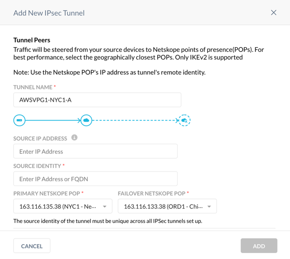Use the Netskope POP IP addresses to configure Customer Gateways on your AWS account.
In the AWS UI, choose the VPC service, and go to VIRTUAL PRIVATE NETWORK (VPN) > Customer Gateways. Click on Create Customer Gateway and enter the primary Netskope POP name and IP address. Click Create Customer Gateway.
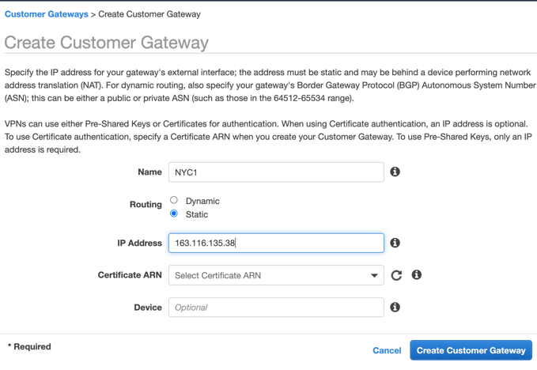Repeat Step 2 to create the Customer Gateway for the failover Netskope POP.
Create the AWS VPG.
In the AWS VPC UI, go to the VIRTUAL PRIVATE NETWORK (VPN) > Virtual Private Gateways. Click Create Virtual Private Gateway, enter the VPG name, and click Create Virtual Private Gateway. Click Close.
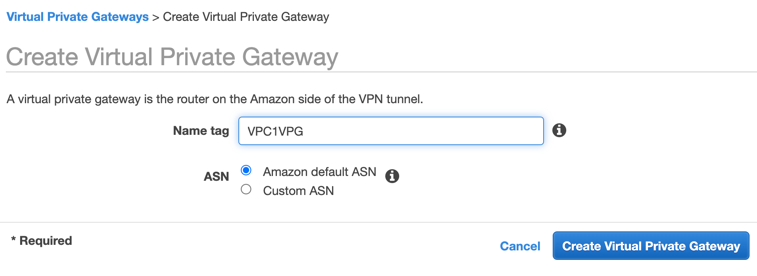Attach the VPG to your VPC.
On the Virtual Private Gateway page, select your VPG, and click Actions > Attach to VPC.
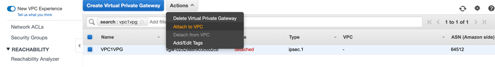Choose your VPC from the drop-down menu, and click Yes, Attach. Click Close.
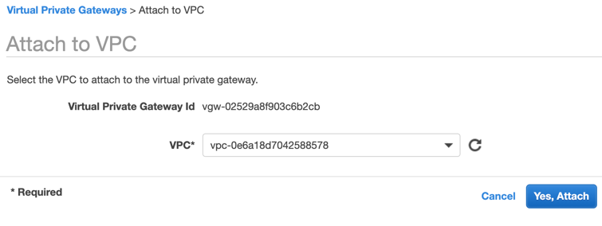Configure the VPN Connection:
In the AWS VPC UI, go to VIRTUAL PRIVATE NETWORK (VPN) > Site-to-Site VPN Connections. Click Create VPN Connection.
Enter the connection name.
Leave Virtual Private Gateway as Target Gateway Type.
Choose the VPG you created in Step 4.
Choose the primary Netskope Customer Gateway ID from the drop-down menu.
Change Routing Options to Static and define the Static IP Prefixes that will be advertised on your VPC. You can enter 0.0.0.0/0 if you’re planning to route all traffic to the Netskope POP or any specific IP subnets or IP addresses. For example, you can enter the Netskope explicit proxy IP address 163.116.128.80/32 if you only want to route the explicit proxy traffic via the IPSec tunnel.
Leave the Local IPv4 CIDR as the default 0.0.0.0/0.
(Optional) You can limit AWS IP addresses that are allowed to communicate over the tunnel by defining them in the Remote IPv4 Network CIDR. Default prefix 0.0.0.0/0 allows any AWS service and application to send packets over the tunnel based on your routing rules.
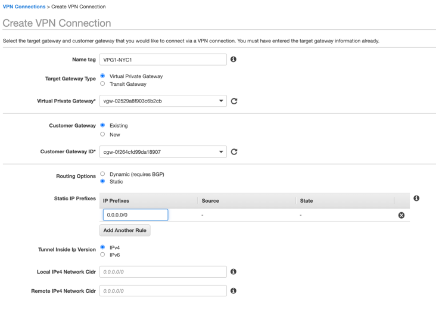In Tunnel Options, click Edit Tunnel 1 Options, and change DPD Timeout Action to Restart and Startup Action to Start.
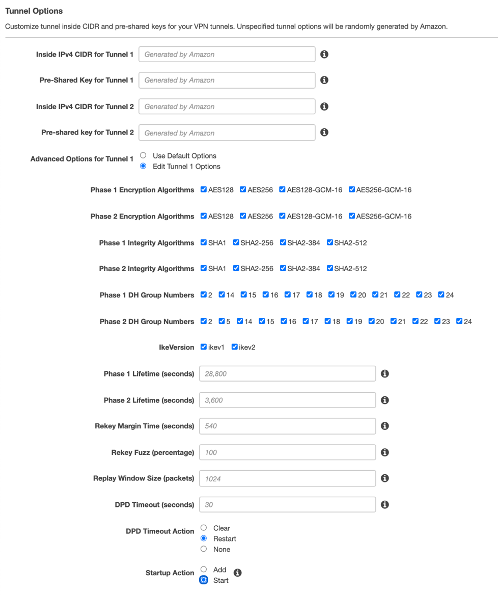Click Edit Tunnel 2 Options, and change DPD Timeout Action to Restart and Startup Action to Start.
Click Create VPN Connection and then Close.
In the Site-to-Site VPN connection window, choose the VPN connection you created, and click Download Configuration.
Choose the Generic Vendor from the drop-down menu, and click Download.
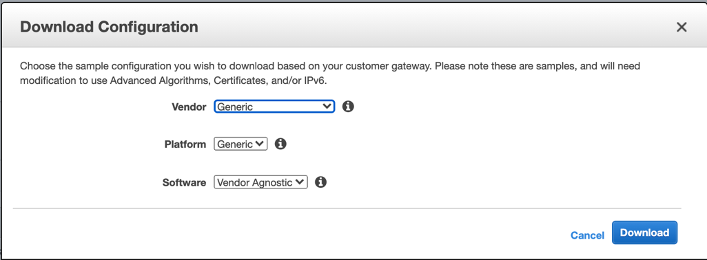
Repeat Step 7 to configure the failover Site-to-Site VPN changing the Customer Gateway ID to the one you defined for the failover Netskope POP.
Finish the IPSec Tunnel configuration in the Netskope UI:
Open the AWS Site-to-Site VPN configuration file for the primary AWS Site-to-Site VPN connection you downloaded in Step 7l.
Copy the Pre-Shared Key for IPSec Tunnel #1 in the configuration file.
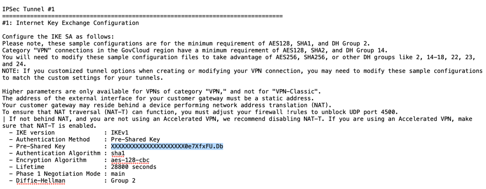In the Netskope UI, enter it in Pre-Shared Key (PSK).
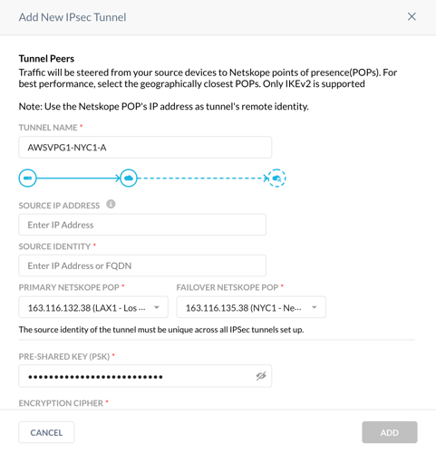In the configuration file, copy the Virtual Private Gateway IP address for IPSec Tunnel #1.
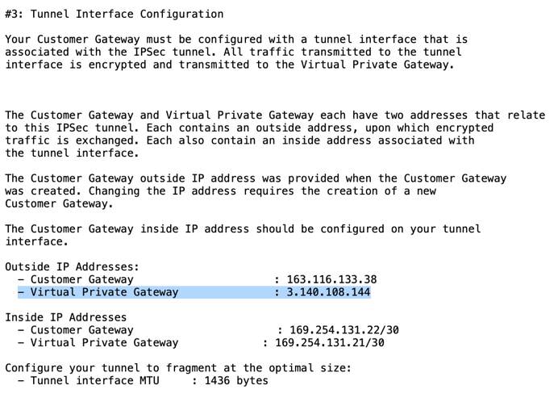In the Netskope UI, enter it in Source Identity.
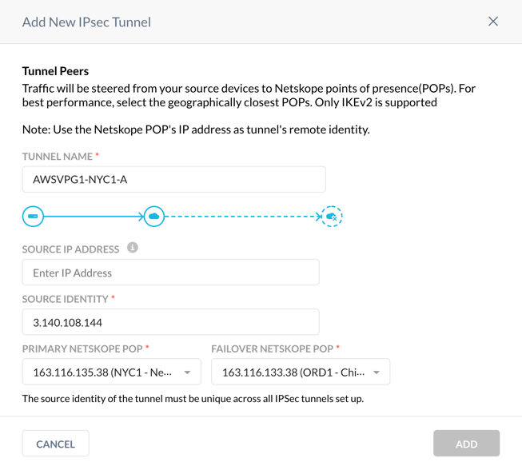Click Add.
Configure the second VPN tunnel in the Netskope UI.
Repeat Step 1 and choose the same primary and failover Netskope POPs.
Repeat the Step 9 and use the Pre-Shared Key for IPSec Tunnel #2 and the Virtual Private Gateway IP address from the first AWS Site-to-Site VPN configuration file.
Configure the third and fourth VPN tunnels in the Netskope UI.
Repeat Step 1 and reverse the primary and failover Netskope POPs.
Repeat Step 9 using the Pre-Shared Keys for IPSec Tunnel #1 and #2, Virtual Private Gateway IP addresses from the second AWS Site-to-Site VPN configuration file.
At this point, you have configured two AWS Site-to-Site VPN connections, each associated with two tunnels and four corresponding VPN tunnels in the Netskope UI.
Check the status of the VPN tunnels in the Netskope UI and assure all four tunnels are up.
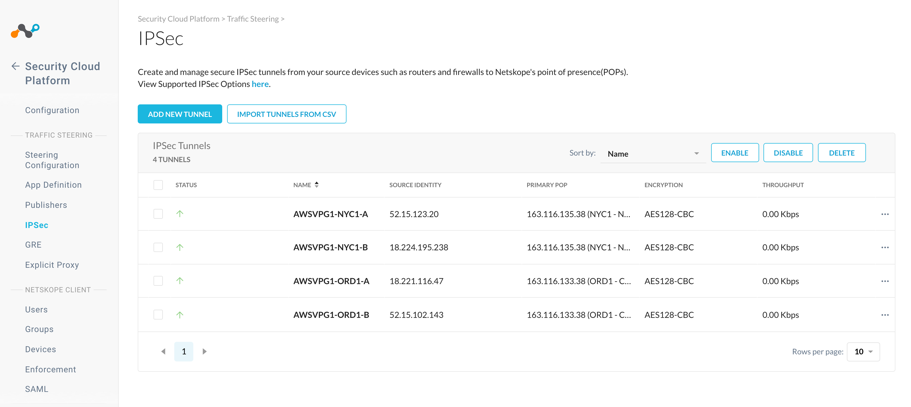In the AWS VPC UI go to VIRTUAL PRIVATE NETWORK (VPN) > Site-to-Site VPN Connections. For each configured connection, select the connection and click the Tunnel Details tab to verify that the status of all four tunnels are up.
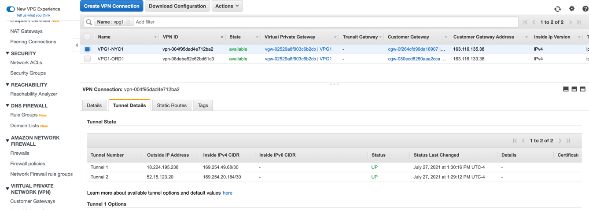Enable route propagation for the appropriate VPC route table.
To propagate the configured route from Step 7f to the route table associated with the VPC subnet, in the AWS VPC UI, go to Route tables and choose the corresponding route table. Click the Route propagation tab, click the Edit route propagation, enable Propagation for your configured VPG, and click Save.

Verify the route was successfully propagated to the route table.
In the AWS VPC UI, go to Route tables, choose your route table, and, in the Routes tab, verify the Propagated column is set to Yes.
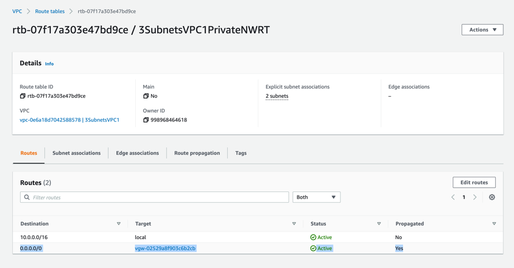
At this point, you established four IPSec tunnels between an AWS VPG and Netskope and a route in the route table associated with the subnet from which you’d like to send traffic to Netskope. To test steering your egress traffic to Netskope, you can launch an EC2 instance in your VPC and try accessing any external website.